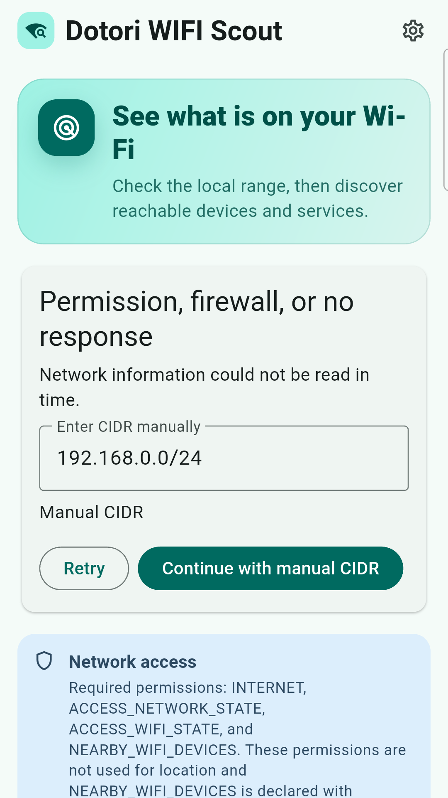
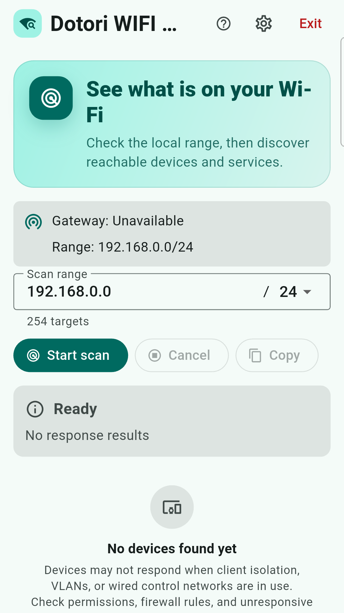
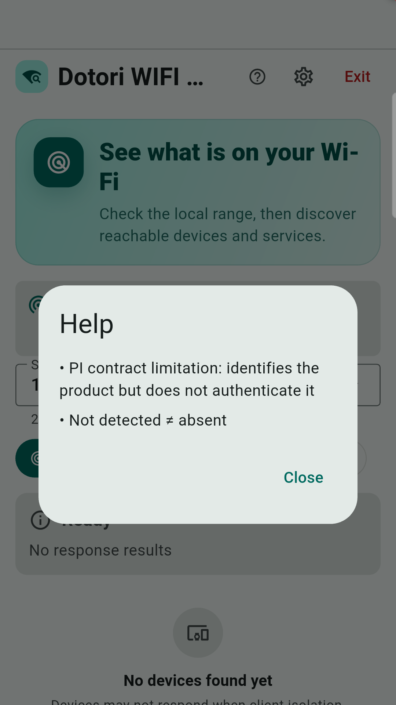
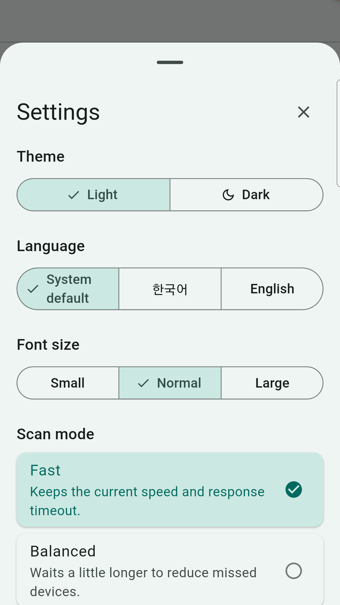

Short answer. Start with the private subnet of the Wi-Fi network the phone has actually joined, then combine several kinds of local evidence. A TCP port, mDNS name, SSDP description, WSD reply, NetBIOS name, or MAC vendor can each be useful, but no single signal identifies every device. And no reply never proves that no device exists.
Dotori WIFI ScoutShows local results as IP address, device kind, and the evidence behind that classification. Results stay on the phone unless you copy them.
This is the situation after joining an unfamiliar workshop, office, or home Wi-Fi: you know the phone's address and perhaps the gateway, but not which addresses belong to the printer, access point, NAS, TV, camera, computer, or controller you came to service.
Begin with the network the phone is using
The phone's IPv4 address and prefix define the first candidate range. A common
192.168.0.0/24 network has 254 usable host addresses, but the prefix should come
from the active network rather than from a hard-coded assumption. If the Android default
network changes, results from the old range should be cleared instead of mixed into the new one.
Use several discovery signals in parallel
| Signal | What it can reveal | Why it is not enough alone |
|---|---|---|
| TCP connect | Reachable services such as web, SSH, printing, SMB, or industrial ports | An open port is a protocol candidate, not a verified model |
| mDNS / DNS-SD | Printers, Cast devices, mobile services, and advertised names | Many devices advertise nothing or expose only a user-assigned name |
| SSDP / UPnP | TVs, media devices, model descriptions, and service types | Replies vary by device state and network filtering |
| WSD | Windows-style printer and device discovery | It covers a family of devices rather than the whole subnet |
| NetBIOS / hostname | Names associated with computers and older network services | Names may be absent, stale, or generic |
| MAC OUI | Likely manufacturer | A vendor name does not prove device type |
Classification becomes useful when these signals reinforce one another. A printer service plus a printer discovery reply is stronger than a vendor name. SMB plus a UPnP model containing NAS evidence is stronger than port 445 alone. Weak evidence should remain visible as a candidate instead of being promoted to certainty.
Choose scan depth without pretending it is free
A quick scan favors short waits. A balanced scan waits longer for devices that answer slowly. An accurate scan can also inspect safe HTTP metadata for manufacturer or model clues. Longer waits and more protocol work can improve classification, but they cannot cross a VLAN or make a device answer traffic it is configured to ignore.
Why “not found” does not mean “not there”
- Client isolation can let phones reach the internet while blocking one Wi-Fi client from another.
- VLAN separation can place the target on a different broadcast domain.
- A wired control network may not be routed to the wireless segment.
- Host firewalls may drop discovery and connection probes.
- Sleeping or busy equipment may answer later or not at all.
For industrial devices, finding a likely port is a sensible stopping point. A model-specific identity request should be a user-approved, read-only unicast to one selected candidate—not a write command broadcast across equipment. Scan only networks and devices you own or are authorized to manage.
Network access, scan, help, and settings screens




Dotori WIFI Scout combines local discovery signals and keeps the evidence beside each IP instead of turning one weak clue into a confident label. More about Dotori WIFI Scout